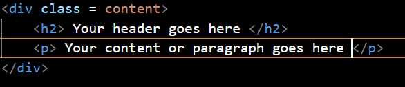
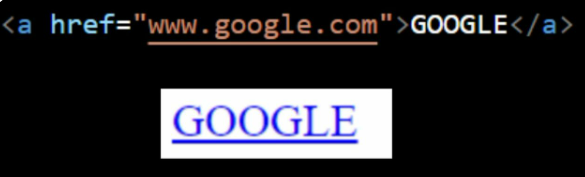
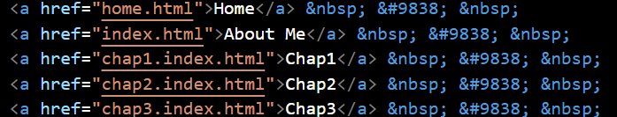
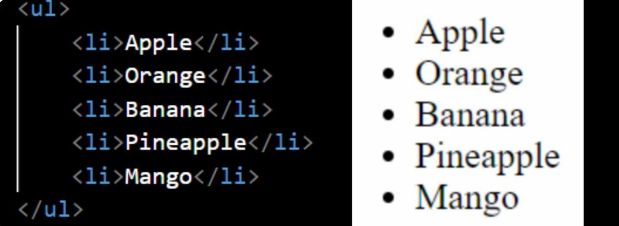
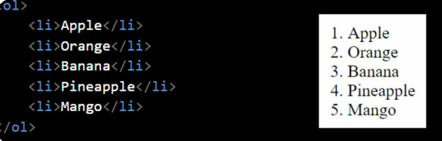
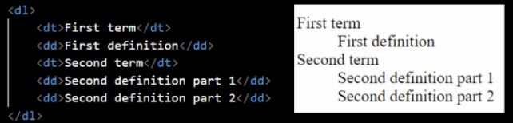
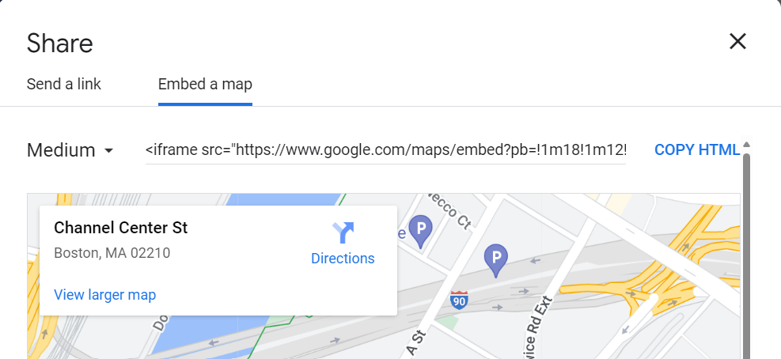

Images and Links are the most essential pieces for a Websites. There are more than a millions of Websites already created and images are what make them stand out from the others. They are used throughout the website to deliver a visual appeal to the user.
Here are the activities you will be learning in this Chapter
Images serve as visual representations that showcase a company's products and services Images can be photos, drawings, charts, diagrams and other graphics to contribute to the design and asthetic of the webpage.
Here are the several formats that can be use for appropriate design

Div tag defines a division or section in a webpage. You can add a div element by typing (div)
You can name the div element by simply making a class and assign a name to your liking as in the picture below
To add Hyperlink, you can use the 'a' tag or anchor tag
This is a link that takes you to google's homepage when you click GOOGLE
This is an example of a relative link which means connecting files in same folder
Adding a list can be done in two different way. There are two different lists
ul - unorder list which means bullet points
ol - order list which mean number points
dl - descriptive list which print out with indents
To embed a map, go to the location on google map, select embed a map under share, and copy iframe code
And then just paste it in footer tag, the code is long and it is normal
You can open them from a new browser and type in the html file name and check on it.